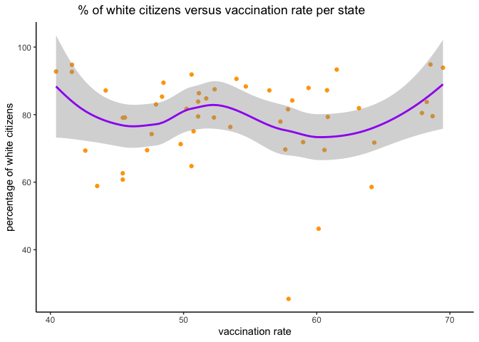
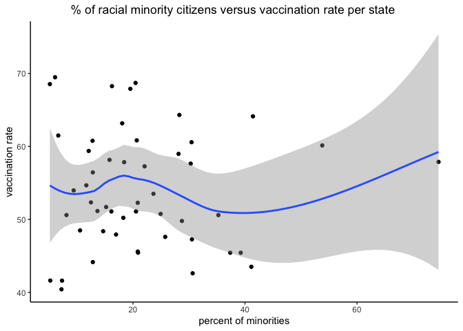
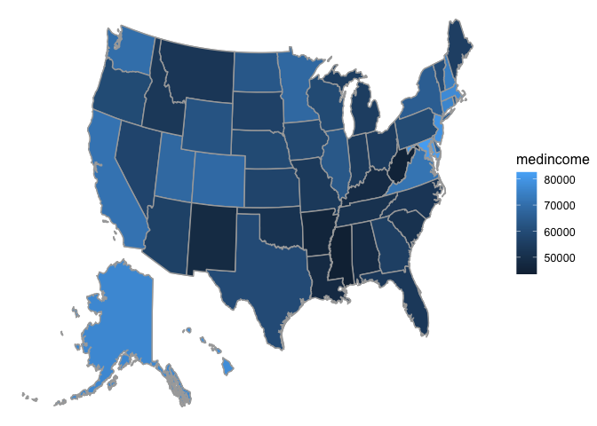
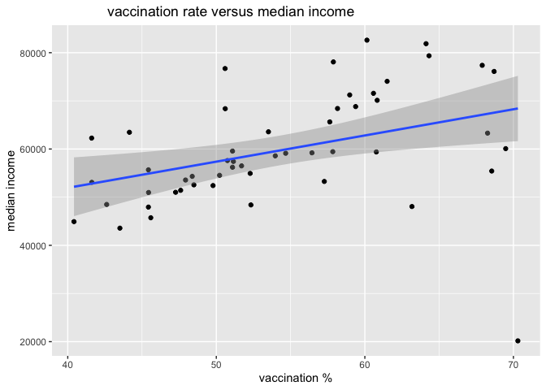

COVID VACCINATION TRENDS
Research Question:
How and what demographic factors (race, median household income, percentage of employees that are healthcare workers or teachers, age, origin) along with geographical location impact the Covid-19 vaccination rate?
Tools Utilized:
Programmed in R, using the tidyverse, mosaic and lubridate libraries. Data visualization done using ggplot functionalities. Data sourced from the CDC Covid-19 dashboard and the Bureau of Labor Statistics.
Data visualization



